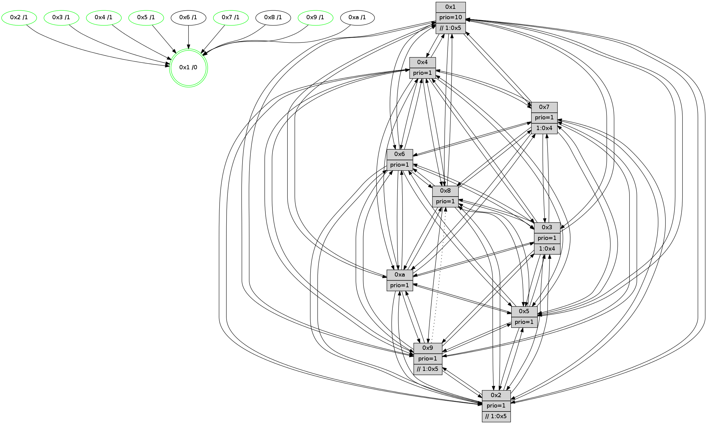

>> << IDX [start] -100 -25 -5 +0 +5 +25 +100 [810.627241135]
 Previous packets
----------------------------------------------------------------------
805.110323 beacon01(faad) #0 coord=01,02,03,04,05,06,07,0a,09,08 cycle=688.0ms assoc
-- color-indic=1 64 de 88
805.120305 beacon02(faad) #0 coord=01,02,03,04,05,06,07,0a,09,08 cycle=688.0ms assoc 64 4d b9
805.130305 beacon03(faad) #0 coord=01,02,03,04,05,06,07,0a,09,08 cycle=688.0ms assoc 64 37 f4
805.140306 beacon04(faad) #0 coord=01,02,03,04,05,06,07,0a,09,08 cycle=688.0ms assoc 64 40 1e
805.150309 beacon05(faad) #0 coord=01,02,03,04,05,06,07,0a,09,08 cycle=688.0ms assoc 64 3a 53
805.160306 beacon06(faad) #0 coord=01,02,03,04,05,06,07,0a,09,08 cycle=688.0ms assoc 64 b4 84
805.170307 beacon07(faad) #0 coord=01,02,03,04,05,06,07,0a,09,08 cycle=688.0ms assoc 64 ce c9
805.180312 beacon0a(faad) #0 coord=01,02,03,04,05,06,07,0a,09,08 cycle=688.0ms assoc 64 bf c2
805.190311 beacon09(faad) #0 coord=01,02,03,04,05,06,07,0a,09,08 cycle=688.0ms assoc 64 31 15
805.200310 beacon08(faad) #0 coord=01,02,03,04,05,06,07,0a,09,08 cycle=688.0ms assoc 64 4b 58
805.213409 [Hello(4): seq=515 sym=5,7,6,2,3,9,8,10,1 sysInfo= stat=5:14,11,13,8/7:4,4,0,4/6:9,11,15,8/2:14,12,10,8/3:14,15,9,5/9:11,1,13,3/8:14,5,13,9/10:4,2,1,7/1:2,6,7,1]
805.216768 [Hello(8): seq=459 sym=5,2,3,4,7,6,9,10,1 sysInfo=hasWarning stat=5:7,6,1,9/2:0,15,9,2/3:5,1,13,9/4:15,8,13,6/7:0,14,1,9/6:5,8,11,8/9:0,2,0,0/10:0,1,0,0/1:11,4,4,0]
805.219601 [Hello(10): seq=448 sym=6,2,3,8,5,7,4,1 asym=9 sysInfo=hasWarning stat=6:15,8,15,3/2:7,0,9,2/3:15,5,7,6/8:12,2,10,8/5:10,4,14,10/7:5,1,14,5/4:7,11,5,6/1:7,6,8,1/9:0,1,0,0]
805.222345 [Color(3) seq=156 @0:0 prio=1 >1.@4,1.@5,1.@6,1.@7]
805.224284 [Hello(7): seq=515 sym=2,3,5,6,4,8,9,10,1 sysInfo=hasWarning stat=2:13,1,4,10/3:1,11,2,9/5:11,4,4,13/6:10,9,3,3/4:5,0,0,0/8:13,5,1,6/9:8,14,2,9/10:2,3,4,8/1:6,7,7,0]
805.227096 [STC(1) #0.89 tree-change,inconsistent-stability,stable,to-color d=0]
805.229976 [Color(6) seq=169 @0:0 prio=1 >1.@8,1.@9,1.@a]
805.232040 [Color(10) seq=147 @0:0 prio=1 >1.@5,1.@8,1.@9]
805.233941 [Hello(9): seq=459 sym=2,5,3,4,7,6,8,10,1 sysInfo=hasWarning stat=2:0,9,8,0/5:1,5,9,1/3:2,12,8,9/4:15,7,10,5/7:0,3,3,7/6:2,2,12,6/8:2,12,3,1/10:0,1,0,0/1:1,1,8,1]
----------------------------------------------------------------------
805.898455 beacon01(faad) #0 coord=01,02,03,04,05,06,07,0a,09,08 cycle=688.0ms assoc
-- color-indic=1 64 ca e6
805.908438 beacon02(faad) #0 coord=01,02,03,04,05,06,07,0a,09,08 cycle=688.0ms assoc 64 59 d7
805.918439 beacon03(faad) #0 coord=01,02,03,04,05,06,07,0a,09,08 cycle=688.0ms assoc 64 23 9a
805.928438 beacon04(faad) #0 coord=01,02,03,04,05,06,07,0a,09,08 cycle=688.0ms assoc 64 54 70
805.938438 beacon05(faad) #0 coord=01,02,03,04,05,06,07,0a,09,08 cycle=688.0ms assoc 64 2e 3d
805.948438 beacon06(faad) #0 coord=01,02,03,04,05,06,07,0a,09,08 cycle=688.0ms assoc 64 a0 ea
805.958438 beacon07(faad) #0 coord=01,02,03,04,05,06,07,0a,09,08 cycle=688.0ms assoc 64 da a7
805.968443 beacon0a(faad) #0 coord=01,02,03,04,05,06,07,0a,09,08 cycle=688.0ms assoc 64 ab ac
805.988445 beacon08(faad) #0 coord=01,02,03,04,05,06,07,0a,09,08 cycle=688.0ms assoc 64 5f 36
806.000027 [Hello(1): seq=425 sym=4,2,9,5,10,3,8,6,7 sysInfo=coloring-mode-on,ColoringModeRequestCalled stat=4:3,5,15,0/2:15,6,7,9/9:1,11,13,1/5:1,3,1,2/10:11,7,6,8/3:12,10,5,0/8:8,7,7,8/6:0,1,7,7/7:9,11,13,11]
806.002496 [Hello(6): seq=516 sym=2,3,5,4,7,9,8,10,1 sysInfo= stat=2:5,5,6,7/3:5,2,14,7/5:0,1,0,10/4:15,7,10,0/7:10,13,12,3/9:3,3,0,0/8:15,7,13,7/10:0,15,4,7/1:4,1,3,1]
806.005169 [Hello(3): seq=516 sym=1,7,6,2,4,8,9,10,5 sysInfo= stat=1:1,3,11,0/7:0,15,11,5/6:10,9,6,8/2:14,0,11,8/4:7,2,7,5/8:5,1,10,4/9:12,6,14,7/10:14,1,12,7/5:8,1,10,8]
806.007902 [STC(7)->1 #0.89 tree-change,inconsistent-stability,stable,to-color d=1]
806.009599 [STC(3)->1 #0.89 tree-change,inconsistent-stability,stable,to-color d=1]
806.011526 [STC(4)->1 #0.89 tree-change,inconsistent-stability,stable,to-color d=1]
806.013185 [Color(7) seq=135 @0:0 prio=1 >1.@4,1.@5,1.@6,1.@8]
806.016052 [Hello(2): seq=512 sym=4,5,7,6,3,9,8,10,1 sysInfo=hasWarning stat=4:7,3,10,4/5:3,2,9,2/7:4,2,2,7/6:8,9,15,6/3:10,6,8,4/9:0,6,10,0/8:1,2,8,6/10:9,8,9,6/1:7,15,4,1]
806.019197 [STC(2)->1 #0.89 tree-change,inconsistent-stability,stable,to-color d=1]
806.022739 [Color(2) seq=161 @0:0 prio=1 >>1.@5,1.@6,1.@7]
806.025268 [Hello(5): seq=516 sym=7,6,4,3,1,9,8,10,2 sysInfo=hasWarning stat=7:4,3,1,6/6:13,6,0,7/4:15,8,5,5/3:13,0,7,7/1:8,2,9,1/9:8,7,11,0/8:13,14,8,6/10:15,5,6,1/2:2,7,2,0]
806.029381 [STC(5)->1 #0.89 tree-change,inconsistent-stability,stable,to-color d=1]
806.031639 [TreeStatus(5)-.->1 #0.89 tree-change,inconsistent-stability,stable child=1]
806.033780 [Color(5) seq=169 @0:0 prio=1 >1.@9,1.@a]
----------------------------------------------------------------------
806.686585 beacon01(faad) #0 coord=01,02,03,04,05,06,07,0a,09,08 cycle=688.0ms assoc
-- color-indic=1 64 76 e3
806.696568 beacon02(faad) #0 coord=01,02,03,04,05,06,07,0a,09,08 cycle=688.0ms assoc 64 e5 d2
806.706568 beacon03(faad) #0 coord=01,02,03,04,05,06,07,0a,09,08 cycle=688.0ms assoc 64 9f 9f
806.716568 beacon04(faad) #0 coord=01,02,03,04,05,06,07,0a,09,08 cycle=688.0ms assoc 64 e8 75
806.726567 beacon05(faad) #0 coord=01,02,03,04,05,06,07,0a,09,08 cycle=688.0ms assoc 64 92 38
806.736569 beacon06(faad) #0 coord=01,02,03,04,05,06,07,0a,09,08 cycle=688.0ms assoc 64 1c ef
806.746567 beacon07(faad) #0 coord=01,02,03,04,05,06,07,0a,09,08 cycle=688.0ms assoc 64 66 a2
806.756574 beacon0a(faad) #0 coord=01,02,03,04,05,06,07,0a,09,08 cycle=688.0ms assoc 64 17 a9
806.776573 beacon08(faad) #0 coord=01,02,03,04,05,06,07,0a,09,08 cycle=688.0ms assoc 64 e3 33
806.789397 [Hello(4): seq=516 sym=5,7,6,2,3,9,8,10,1 sysInfo= stat=5:15,12,14,9/7:5,4,0,4/6:9,12,15,8/2:15,13,11,8/3:14,0,9,5/9:12,2,13,3/8:15,5,13,9/10:5,3,1,7/1:2,6,8,1]
806.792434 [Color(3) seq=157 @0:0 prio=1 >1.@4,1.@5,1.@6,1.@7]
806.794490 [Hello(9): seq=460 sym=2,5,3,4,7,6,8,10,1 sysInfo=hasWarning stat=2:1,10,9,0/5:2,6,10,2/3:3,12,9,9/4:0,7,11,6/7:0,3,4,7/6:3,2,12,6/8:2,12,3,1/10:0,1,0,0/1:2,1,8,1]
806.797370 [Hello(10): seq=449 sym=6,2,3,8,9,5,7,4,1 sysInfo=hasWarning stat=6:0,8,15,3/2:8,1,10,2/3:0,5,8,6/8:12,3,10,8/9:1,1,0,0/5:11,5,15,11/7:5,2,15,5/4:8,11,6,6/1:8,6,8,1]
806.803667 [Color(8) seq=183 @0:0 prio=1 >1.@5,1.@9,1.@a]
806.805593 [Color(10) seq=148 @0:0 prio=1 >1.@5,1.@8,1.@9]
806.809429 [Color(9) seq=165 @0:0 prio=1 >>1.@5,1.@6,1.@7]
806.812680 [Color(6) seq=170 @0:0 prio=1 >1.@8,1.@9,1.@a]
----------------------------------------------------------------------
807.474716 beacon01(faad) #0 coord=01,02,03,04,05,06,07,0a,09,08 cycle=688.0ms assoc
-- color-indic=1 64 b2 ed
807.484698 beacon02(faad) #0 coord=01,02,03,04,05,06,07,0a,09,08 cycle=688.0ms assoc 64 21 dc
807.494698 beacon03(faad) #0 coord=01,02,03,04,05,06,07,0a,09,08 cycle=688.0ms assoc 64 5b 91
807.504698 beacon04(faad) #0 coord=01,02,03,04,05,06,07,0a,09,08 cycle=688.0ms assoc 64 2c 7b
807.514698 beacon05(faad) #0 coord=01,02,03,04,05,06,07,0a,09,08 cycle=688.0ms assoc 64 56 36
807.524700 beacon06(faad) #0 coord=01,02,03,04,05,06,07,0a,09,08 cycle=688.0ms assoc 64 d8 e1
807.534700 beacon07(faad) #0 coord=01,02,03,04,05,06,07,0a,09,08 cycle=688.0ms assoc 64 a2 ac
807.544704 beacon0a(faad) #0 coord=01,02,03,04,05,06,07,0a,09,08 cycle=688.0ms assoc 64 d3 a7
807.554704 beacon09(faad) #0 coord=01,02,03,04,05,06,07,0a,09,08 cycle=688.0ms assoc 64 5d 70
807.564705 beacon08(faad) #0 coord=01,02,03,04,05,06,07,0a,09,08 cycle=688.0ms assoc 64 27 3d
807.575924 [Hello(6): seq=517 sym=2,3,5,4,7,9,8,10,1 sysInfo= stat=2:6,6,7,7/3:6,2,15,7/5:1,2,1,11/4:0,7,11,0/7:10,14,13,3/9:3,3,0,0/8:15,7,13,7/10:0,15,4,7/1:4,1,3,1]
807.579393 [Color(7) seq=136 @0:0 prio=1 >1.@4,1.@5,1.@6,1.@8]
807.582333 [Color(4) seq=135 @0:0 prio=1]
807.584318 [Hello(3): seq=517 sym=1,7,6,2,4,8,9,10,5 sysInfo= stat=1:1,3,11,0/7:1,0,11,5/6:10,10,6,8/2:15,1,12,8/4:8,2,8,5/8:5,2,10,4/9:13,7,14,7/10:15,2,12,7/5:9,2,11,9]
807.586830 [Hello(2): seq=513 sym=4,5,7,6,3,9,8,10,1 sysInfo=hasWarning stat=4:8,3,10,4/5:4,3,10,3/7:5,2,2,7/6:9,10,15,6/3:10,7,8,4/9:1,7,10,0/8:1,3,8,6/10:10,9,9,6/1:8,15,4,1]
807.589269 [Hello(5): seq=517 sym=7,6,4,3,1,9,8,10,2 sysInfo=hasWarning stat=7:4,3,1,6/6:14,7,0,7/4:0,8,5,5/3:13,1,7,7/1:9,2,9,1/9:9,8,11,0/8:14,15,8,6/10:0,6,6,1/2:2,7,2,0]
807.592303 [Color(2) seq=162 @0:0 prio=1 >>1.@5,1.@6,1.@7]
807.593989 [Color(5) seq=170 @0:0 prio=1 >1.@9,1.@a]
----------------------------------------------------------------------
808.262848 beacon01(faad) #0 coord=01,02,03,04,05,06,07,0a,09,08 cycle=688.0ms assoc
-- color-indic=1 64 0e e8
808.272830 beacon02(faad) #0 coord=01,02,03,04,05,06,07,0a,09,08 cycle=688.0ms assoc 64 9d d9
808.282830 beacon03(faad) #0 coord=01,02,03,04,05,06,07,0a,09,08 cycle=688.0ms assoc 64 e7 94
808.292832 beacon04(faad) #0 coord=01,02,03,04,05,06,07,0a,09,08 cycle=688.0ms assoc 64 90 7e
808.302832 beacon05(faad) #0 coord=01,02,03,04,05,06,07,0a,09,08 cycle=688.0ms assoc 64 ea 33
808.312831 beacon06(faad) #0 coord=01,02,03,04,05,06,07,0a,09,08 cycle=688.0ms assoc 64 64 e4
808.322831 beacon07(faad) #0 coord=01,02,03,04,05,06,07,0a,09,08 cycle=688.0ms assoc 64 1e a9
808.332836 beacon0a(faad) #0 coord=01,02,03,04,05,06,07,0a,09,08 cycle=688.0ms assoc 64 6f a2
808.352837 beacon08(faad) #0 coord=01,02,03,04,05,06,07,0a,09,08 cycle=688.0ms assoc 64 9b 38
808.364054 [Hello(4): seq=517 sym=5,7,6,2,3,9,8,10,1 sysInfo= stat=5:15,13,14,9/7:5,4,0,4/6:10,13,15,8/2:0,14,11,8/3:15,0,9,5/9:13,3,13,3/8:15,6,13,9/10:6,4,1,7/1:2,7,8,1]
808.367375 [Hello(7): seq=517 sym=2,3,5,6,4,8,9,10,1 sysInfo=hasWarning stat=2:15,3,5,10/3:2,11,2,9/5:12,6,5,14/6:12,11,3,3/4:5,1,0,0/8:13,7,1,6/9:9,15,2,9/10:2,5,4,8/1:7,7,8,0]
808.370029 [Color(3) seq=158 @0:0 prio=1 >1.@4,1.@5,1.@6,1.@7]
808.371696 [Hello(10): seq=450 sym=6,2,3,9,5,7,4,1 asym=8 sysInfo=hasWarning stat=6:1,9,15,3/2:9,2,10,2/3:1,5,8,6/9:1,2,0,0/5:11,6,15,11/7:5,3,15,5/4:9,12,6,6/1:8,6,8,1/8:12,3,10,8]
808.374332 [Color(1) seq=198 @0:0 prio=10 >>1.@5,1.@6,1.@7]
808.376349 [Color(6) seq=171 @0:0 prio=1]
808.379499 [Color(10) seq=149 @0:0 prio=1]
808.381567 [Hello(8): seq=461 sym=5,2,3,4,7,6,9,10,1 sysInfo=hasWarning stat=5:8,8,2,10/2:2,1,10,2/3:7,1,14,9/4:1,9,14,6/7:0,0,2,9/6:7,9,11,8/9:0,3,0,0/10:0,2,0,0/1:12,4,4,0]
808.386298 [Color(8) seq=184 @0:0 prio=1]
808.388604 [Hello(9): seq=461 sym=2,5,3,4,7,6,8,10,1 sysInfo=hasWarning stat=2:2,11,9,0/5:2,7,10,2/3:4,12,9,9/4:1,8,11,6/7:0,4,4,7/6:4,3,12,6/8:2,12,3,1/10:0,1,0,0/1:2,1,8,1]
808.393005 [Color(9) seq=166 @0:0 prio=1 >>1.@5,1.@6,1.@7]
----------------------------------------------------------------------
809.050978 beacon01(faad) #0 coord=01,02,03,04,05,06,07,0a,09,08 cycle=688.0ms assoc
-- color-indic=1 64 3a f0
809.060961 beacon02(faad) #0 coord=01,02,03,04,05,06,07,0a,09,08 cycle=688.0ms assoc 64 a9 c1
809.070960 beacon03(faad) #0 coord=01,02,03,04,05,06,07,0a,09,08 cycle=688.0ms assoc 64 d3 8c
809.080961 beacon04(faad) #0 coord=01,02,03,04,05,06,07,0a,09,08 cycle=688.0ms assoc 64 a4 66
809.090962 beacon05(faad) #0 coord=01,02,03,04,05,06,07,0a,09,08 cycle=688.0ms assoc 64 de 2b
809.100961 beacon06(faad) #0 coord=01,02,03,04,05,06,07,0a,09,08 cycle=688.0ms assoc 64 50 fc
809.110963 beacon07(faad) #0 coord=01,02,03,04,05,06,07,0a,09,08 cycle=688.0ms assoc 64 2a b1
809.120967 beacon0a(faad) #0 coord=01,02,03,04,05,06,07,0a,09,08 cycle=688.0ms assoc 64 5b ba
809.140967 beacon08(faad) #0 coord=01,02,03,04,05,06,07,0a,09,08 cycle=688.0ms assoc 64 af 20
809.153464 [Hello(6): seq=518 sym=2,3,5,4,7,9,8,10,1 sysInfo= stat=2:7,7,7,7/3:7,2,15,7/5:1,3,1,11/4:1,8,11,0/7:10,15,13,3/9:4,4,0,0/8:0,8,13,7/10:0,0,4,7/1:4,1,3,1]
809.156198 [Color(7) seq=137 @0:0 prio=1 >1.@4,1.@6]
809.158076 [Hello(1): seq=427 sym=4,2,9,5,10,3,8,6,7 sysInfo=coloring-mode-on,ColoringModeRequestCalled stat=4:5,6,0,0/2:1,8,8,9/9:3,13,13,1/5:2,5,2,3/10:12,9,6,8/3:14,10,6,0/8:9,9,7,8/6:1,3,7,7/7:9,13,14,11]
809.160772 [Hello(2): seq=514 sym=4,5,7,6,3,9,8,10,1 sysInfo=hasWarning stat=4:9,3,10,4/5:5,4,10,3/7:6,3,2,7/6:10,11,15,6/3:10,8,8,4/9:2,8,10,0/8:2,4,8,6/10:11,10,9,6/1:8,0,4,1]
809.163489 [Color(4) seq=136 @0:0 prio=1]
809.166793 [Hello(3): seq=518 sym=1,7,6,2,4,8,9,10,5 sysInfo= stat=1:1,4,11,0/7:1,0,11,5/6:10,11,6,8/2:0,2,12,8/4:9,2,8,5/8:6,3,10,4/9:14,8,14,7/10:0,3,12,7/5:9,3,11,9]
809.170050 [Hello(5): seq=518 sym=7,6,4,3,1,9,8,10,2 sysInfo=hasWarning stat=7:5,3,1,6/6:15,8,0,7/4:1,8,5,5/3:13,2,7,7/1:9,3,9,1/9:10,9,11,0/8:15,0,8,6/10:1,7,6,1/2:2,7,2,0]
809.174472 [Color(5) seq=171 @0:0 prio=1]
809.176989 [Color(2) seq=163 @0:0 prio=1 >>1.@5,1.@6,1.@7]
809.180158 [STC(1) #0.90 tree-change,inconsistent-stability,stable,to-color d=0]
----------------------------------------------------------------------
809.839111 beacon01(faad) #0 coord=01,02,03,04,05,06,07,0a,09,08 cycle=688.0ms assoc
-- color-indic=1 64 86 f5
809.849094 beacon02(faad) #0 coord=01,02,03,04,05,06,07,0a,09,08 cycle=688.0ms assoc 64 15 c4
809.859092 beacon03(faad) #0 coord=01,02,03,04,05,06,07,0a,09,08 cycle=688.0ms assoc 64 6f 89
809.869093 beacon04(faad) #0 coord=01,02,03,04,05,06,07,0a,09,08 cycle=688.0ms assoc 64 18 63
809.879094 beacon05(faad) #0 coord=01,02,03,04,05,06,07,0a,09,08 cycle=688.0ms assoc 64 62 2e
809.889095 beacon06(faad) #0 coord=01,02,03,04,05,06,07,0a,09,08 cycle=688.0ms assoc 64 ec f9
809.899095 beacon07(faad) #0 coord=01,02,03,04,05,06,07,0a,09,08 cycle=688.0ms assoc 64 96 b4
809.909099 beacon0a(faad) #0 coord=01,02,03,04,05,06,07,0a,09,08 cycle=688.0ms assoc 64 e7 bf
809.919099 beacon09(faad) #0 coord=01,02,03,04,05,06,07,0a,09,08 cycle=688.0ms assoc 64 69 68
809.929099 beacon08(faad) #0 coord=01,02,03,04,05,06,07,0a,09,08 cycle=688.0ms assoc 64 13 25
809.940667 [STC(6)->1 #0.90 to-color d=1]
809.942315 [STC(2)->1 #0.90 tree-change,inconsistent-stability,stable,to-color d=1]
809.943575 [Hello(4): seq=518 sym=5,7,6,2,3,9,8,10,1 sysInfo= stat=5:0,14,14,9/7:6,4,0,4/6:11,14,15,8/2:0,15,11,8/3:0,1,9,5/9:14,4,13,3/8:0,7,13,9/10:7,5,1,7/1:2,8,9,1]
809.946720 [STC(4)->1 #0.90 tree-change,inconsistent-stability,stable,to-color d=1]
809.948216 [STC(3)->1 #0.90 tree-change,inconsistent-stability,stable,to-color d=1]
809.951078 [Hello(7): seq=518 sym=2,3,5,6,4,8,9,10,1 sysInfo=hasWarning stat=2:0,4,5,10/3:3,12,2,9/5:13,7,5,14/6:13,12,3,3/4:5,2,0,0/8:14,8,1,6/9:10,0,2,9/10:3,6,4,8/1:8,8,9,0]
809.953734 [Hello(9): seq=462 sym=2,5,3,4,7,6,10,1 asym=8 sysInfo=hasWarning stat=2:3,12,9,0/5:3,8,10,2/3:5,12,9,9/4:2,9,11,6/7:1,5,4,7/6:5,3,12,6/10:0,1,0,0/1:3,1,9,1/8:2,12,3,1]
809.956261 [Hello(8): seq=462 sym=5,2,3,4,7,6,9,10,1 sysInfo=hasWarning stat=5:9,9,2,10/2:3,2,10,2/3:8,1,14,9/4:2,10,14,6/7:1,1,2,9/6:8,9,11,8/9:1,4,0,0/10:0,2,0,0/1:13,4,5,0]
809.958995 [Color(1) seq=199 @0:0 prio=10 >>1.@5,1.@6,1.@7]
809.960738 [Hello(10): seq=451 sym=6,2,3,8,9,5,7,4,1 sysInfo=hasWarning stat=6:2,9,15,3/2:10,3,10,2/3:2,5,8,6/8:13,4,10,8/9:2,3,0,0/5:12,7,15,11/7:6,4,15,5/4:10,13,6,6/1:9,6,9,1]
809.963549 [STC(10)->1 #0.90 to-color d=1]
809.965736 [STC(5)->1 #0.90 tree-change,inconsistent-stability,stable,to-color d=1]
809.967739 [STC(7)->1 #0.90 tree-change,inconsistent-stability,stable,to-color d=1]
809.971736 [STC(9)->1 #0.90 tree-change,inconsistent-stability,stable,to-color d=1]
809.973681 [Color(9) seq=167 @0:0 prio=1 >>1.@5,1.@6,1.@7]
809.976324 [Color(3) seq=159 @0:0 prio=1 >1.@4,1.@6,1.@7]
809.982995 [STC(8)->1 #0.90 to-color d=1]